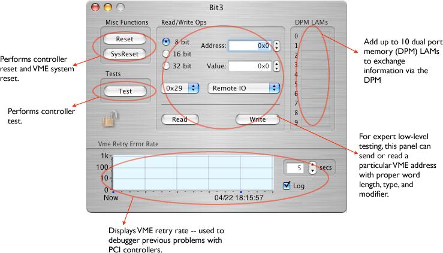
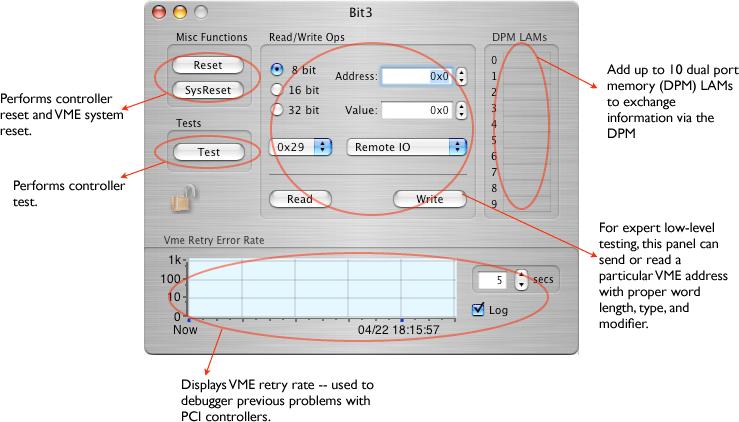

The Bit 3 Controller can only be placed in a host computer object. It can be used for any of the PCI to VME controllers (ie. 617, 620, 810). The icon looks like this: 

The Bit 3 Controller can only be placed in a host computer object. It can be used for any of the PCI to VME controllers (ie. 617, 620, 810). The icon looks like this: 

Note that this dialog is an expert level dialog is used for low-level testing of VME objects. The functions on this dialog do not need to be accessed on a normal basis nor does this dialog need to be used to set up the controller.